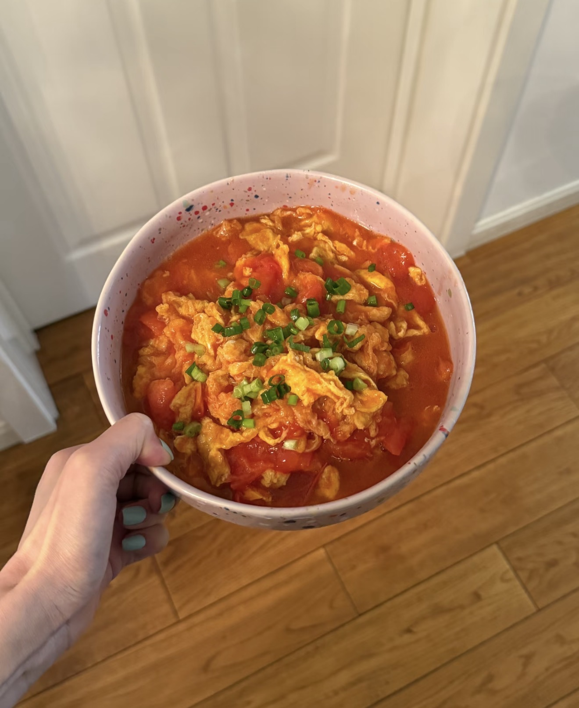
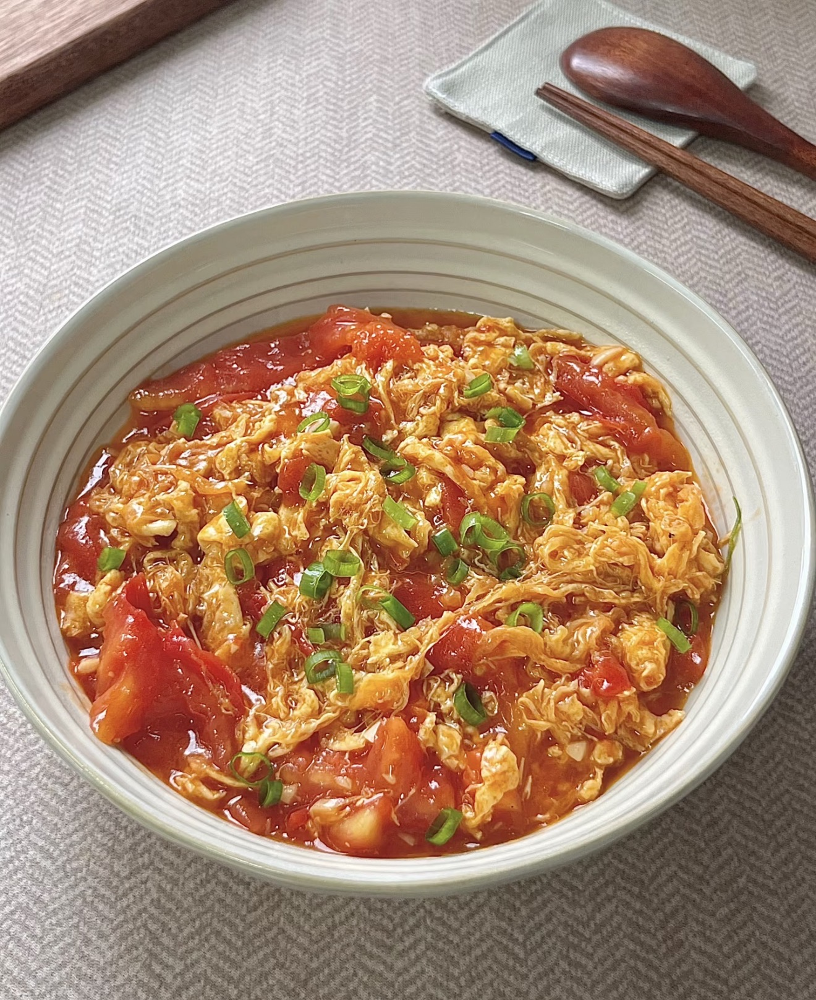

Sweet Tomato Scrambled Eggs
甜口番茄炒蛋 — A classic Chinese comfort dish with a sweet and tangy tomato sauce and soft scrambled eggs.
Ingredients
- 3 eggs
- 2 ripe tomatoes
- 2 tbsp ketchup (optional)
- 1–2 tbsp sugar (key for sweet flavor)
- 1/2 tsp salt
- 2 tbsp cooking oil
- Green onions (optional)
Directions
- Crack eggs into a bowl, add a pinch of salt, and beat well.
- Heat oil in a pan, scramble eggs until softly set, then remove.
- In the same pan, cook tomatoes until soft and juicy.
- Add ketchup and sugar, stir to form a sweet tomato sauce.
- Return eggs to the pan and mix gently.
- Taste and adjust seasoning if needed.
- Garnish with green onions and serve hot.